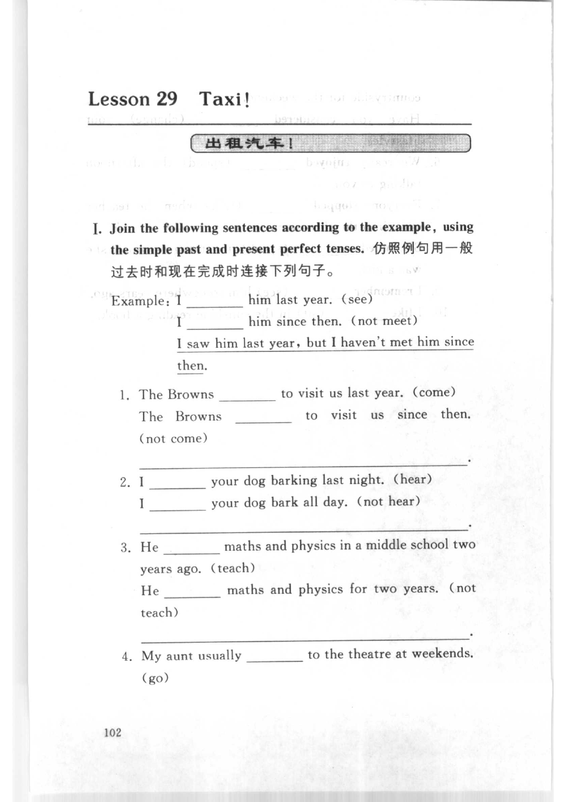
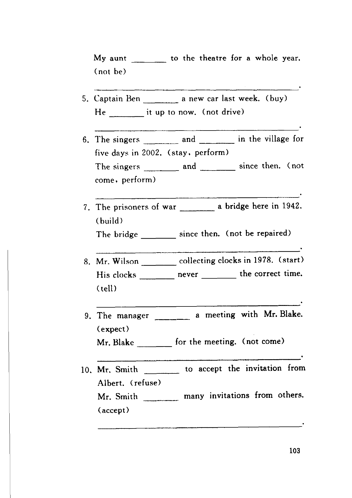
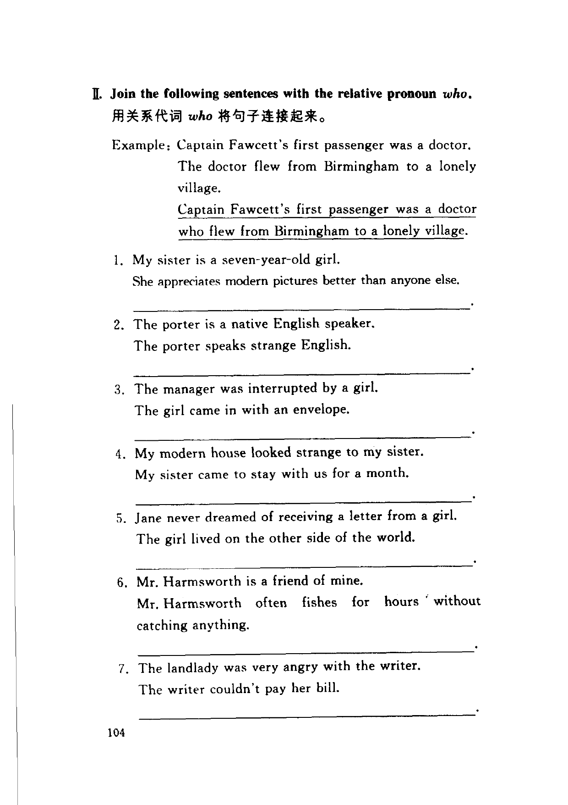
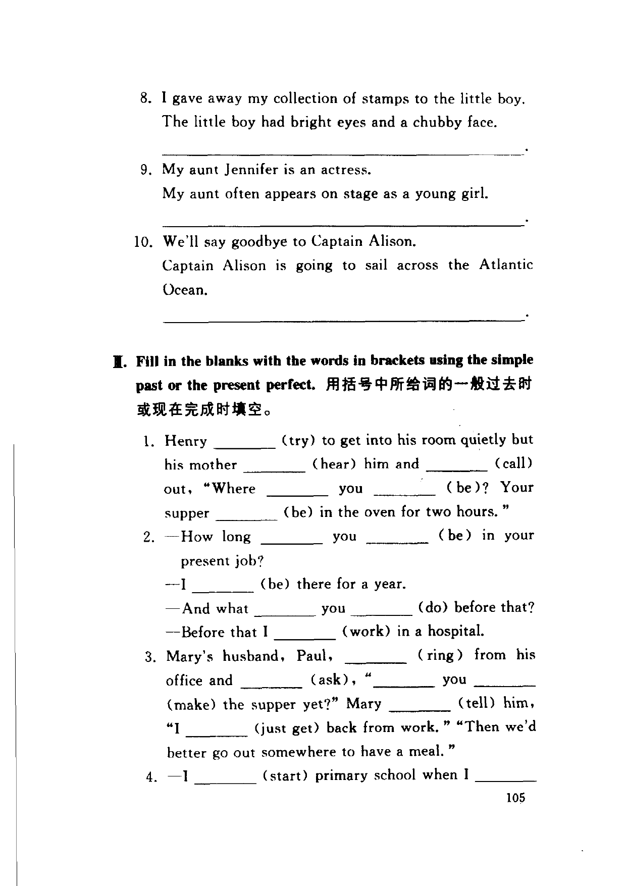
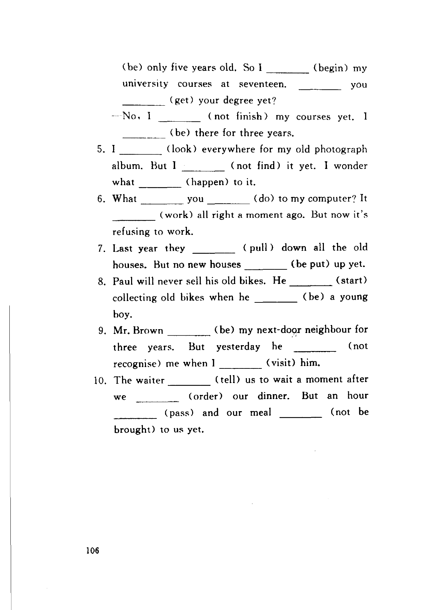

Grammar exercises · 语法练习
I. Join the following sentences according to the example, using the simple past and present perfect tenses.
仿照例句用一般过去时和现在完成时连接下列句子。
Example: I ___ him last year. (see) / I ___ him since then. (not meet)
I saw him last year, but I haven't met him since then.
-
I. Past & present perfect — The Browns to visit us last year. (come) / The Browns to visit us since then. (not come)
-
I. Past & present perfect — I your dog barking last night. (hear) / I your dog bark all day. (not hear)
-
I. Past & present perfect — He maths and physics in a middle school two years ago. (teach) / He maths and physics for two years. (not teach)
-
I. Past & present perfect — My aunt usually to the theatre at weekends. (go) / My aunt to the theatre for a whole year. (not be)
-
I. Past & present perfect — Captain Ben a new car last week. (buy) / He it up to now. (not drive)
-
I. Past & present perfect — The singers and in the village for five days in 2002. (stay, perform) / The singers and since then. (not come, perform)
-
I. Past & present perfect — The prisoners of war a bridge here in 1942. (build) / The bridge since then. (not be repaired)
-
I. Past & present perfect — Mr. Wilson collecting clocks in 1978. (start) / His clocks never the correct time. (tell)
-
I. Past & present perfect — The manager a meeting with Mr. Blake. (expect) / Mr. Blake for the meeting. (not come)
-
I. Past & present perfect — Mr. Smith to accept the invitation from Albert. (refuse) / Mr. Smith many invitations from others. (accept)
II. Join the following sentences with the relative pronoun who.
用关系代词 who 将句子连接起来。
Example: Captain Fawcett's first passenger was a doctor. The doctor flew from Birmingham to a lonely village.
Captain Fawcett's first passenger was a doctor who flew from Birmingham to a lonely village.
-
II. Relative who — My sister is a seven-year-old girl. She appreciates modern pictures better than anyone else.
-
II. Relative who — The porter is a native English speaker. The porter speaks strange English.
-
II. Relative who — The manager was interrupted by a girl. The girl came in with an envelope.
-
II. Relative who — My modern house looked strange to my sister. My sister came to stay with us for a month.
-
II. Relative who — Jane never dreamed of receiving a letter from a girl. The girl lived on the other side of the world.
-
II. Relative who — Mr. Harmsworth is a friend of mine. Mr. Harmsworth often fishes for hours without catching anything.
-
II. Relative who — The landlady was very angry with the writer. The writer couldn't pay her bill.
-
II. Relative who — I gave away my collection of stamps to the little boy. The little boy had bright eyes and a chubby face.
-
II. Relative who — My aunt Jennifer is an actress. My aunt often appears on stage as a young girl.
-
II. Relative who — We'll say goodbye to Captain Alison. Captain Alison is going to sail across the Atlantic Ocean.
III. Fill in the blanks with the words in brackets using the simple past or the present perfect.
用括号中所给词的一般过去时或现在完成时填空。
-
III. Past / present perfect — Henry (try) to get into his room quietly but his mother (hear) him and (call) out, “Where you (be)? Your supper (be) in the oven for two hours.”
-
III. Past / present perfect — —How long you (be) in your present job? —I (be) there for a year. —And what you (do) before that? —Before that I (work) in a hospital.
-
III. Past / present perfect — Mary's husband, Paul, (ring) from his office and (ask), “ you (make) the supper yet?” Mary (tell) him, “I (just get) back from work.” “Then we'd better go out somewhere to have a meal.”
-
III. Past / present perfect — —I (start) primary school when I (be) only five years old. So I (begin) my university courses at seventeen. you (get) your degree yet? —No, I (not finish) my courses yet. I (be) there for three years.
-
III. Past / present perfect — I (look) everywhere for my old photograph album. But I (not find) it yet. I wonder what (happen) to it.
-
III. Past / present perfect — What you (do) to my computer? It (work) all right a moment ago. But now it's refusing to work.
-
III. Past / present perfect — Last year they (pull) down all the old houses. But no new houses (be put) up yet.
-
III. Past / present perfect — Paul will never sell his old bikes. He (start) collecting old bikes when he (be) a young boy.
-
III. Past / present perfect — Mr. Brown (be) my next-door neighbour for three years. But yesterday he (not recognise) me when I (visit) him.
-
III. Past / present perfect — The waiter (tell) us to wait a moment after we (order) our dinner. But an hour (pass) and our meal (not be brought) to us yet.
Original images · 原图对照
Expand a page to compare it with the transcription. Open the original in a new tab to zoom in.
展开原图核对文字，也可以在新标签页打开原图放大查看。
Book page 102 · Exercise I (past and present perfect, items 1–4)
Open original · 打开原图 ↗ Download original · 下载原图


Book page 103 · Exercise I (past and present perfect, items 5–10)
Open original · 打开原图 ↗ Download original · 下载原图


Book page 104 · Exercise II (relative who, items 1–7)
Open original · 打开原图 ↗ Download original · 下载原图


Book page 105 · Exercise II (relative who, items 8–10) and Exercise III (past or present perfect, items 1–4)
Open original · 打开原图 ↗ Download original · 下载原图


Book page 106 · Exercise III (past or present perfect, items 5–10)
Open original · 打开原图 ↗ Download original · 下载原图


Your notes and answers
Use this space for longer responses or exercises that do not have an individual answer box.